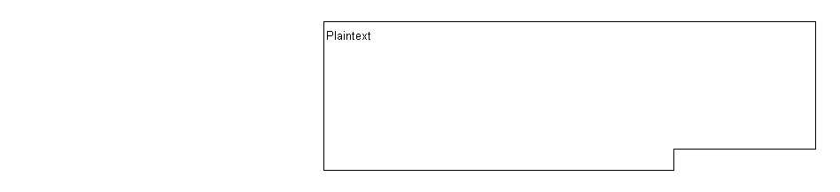
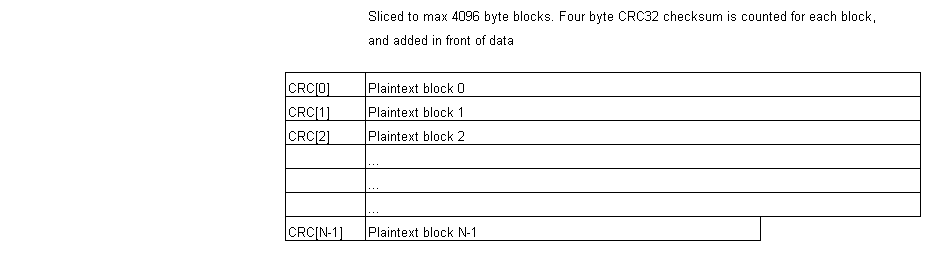
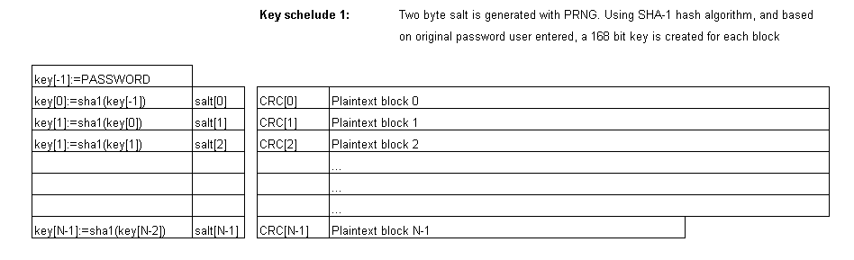
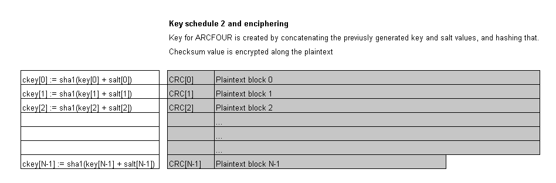
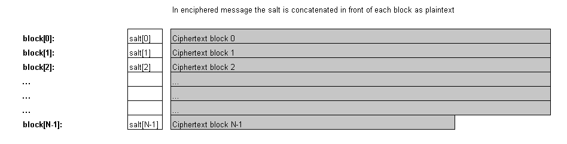

This doesn't give you ultimately accurate picture of the product, but only shows how it works and how you could use it. For details you better have to examine the source code files. (Hey, there's even some comments there!)
For use in your own applications, the following functions are most usable:
encrypt(inStr,psw)
First argument is plaintext string containing data to be encrypted. Second argument is password to use as key. Function returns encrypted data as hexadecimal encoded string.
decrypt(inStr,psw)
First argument is encrypted hex encoded string (returned by encrypt() function) and second argument is the password. Return value is original plain text string.
encryptToArray(str,psw)
Encrypts given string to array of strings. This slicing of original data to smaller pieces increases speed and reduces memory usage. Most JavaScript implementations are somewhat unefficient in string handling.
decryptArray(inA, psw)
Decrypts given array (returned by encryptToArray()) to plain text.
openInNewWindow(inStr,psw)
Decrypts ciphertext given in first argument with password given as second argument. Opens new browser window and writes decrypted text to it.
openInSameWindow(inStr,psw)
Decrypts ciphertext given in first argument with password given as second argument. Clears current browser window and writes decrypted text to it.
Array.arraySwap(i,j)
Swaps two items in the array, indexed as i and j.
Array.arrayPrintSrc(variableName)
Exports array as JavaScript source code. Argument is a string giving a name for the variable created.
If we have an array myArray containing items "A", "B" and "C", the function call myArray.arrayPrintSrc("someName") returns following string:
var someName = new Array(3);someName[0] = 'A';someName[1] = 'B';someName[2] = 'C';
Please don't ask me explain why is this done in so queer way. I know there was some reason for it, but I really can't remember it anymore. And of cource this is the one function without any comments in the source ;)
Phase 1.
Phase 2.
Phase 3.
Phase 4.
Phase 5.
